A local lab for advanced retrieval-augmented generation. Every technique runs for real against real models
(local Ollama, any OpenAI-compatible server, Anthropic, or a rerank API), and every stage shows its inputs, outputs,
timings, prompts and raw model responses.
Your browser cannot play this video. Download it instead.
Setup and build
Point four model roles at local or cloud endpoints, load a corpus, build indexes several ways, and look at the space they make.
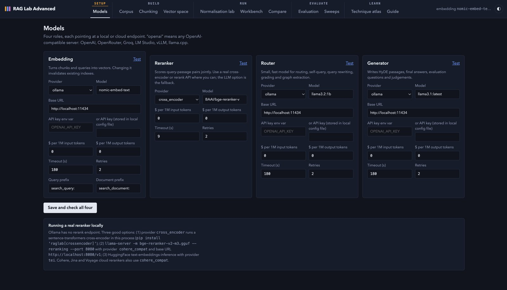
Models. Embedding, reranker, router and generator, each on Ollama, an OpenAI-compatible server, Anthropic or a cross-encoder.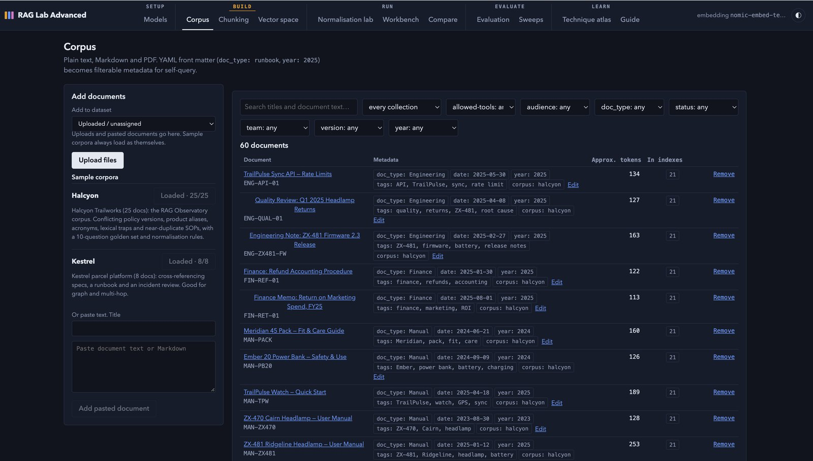
Corpus. Front matter becomes filterable metadata. Two sample corpora, Halcyon and Kestrel, load with one click.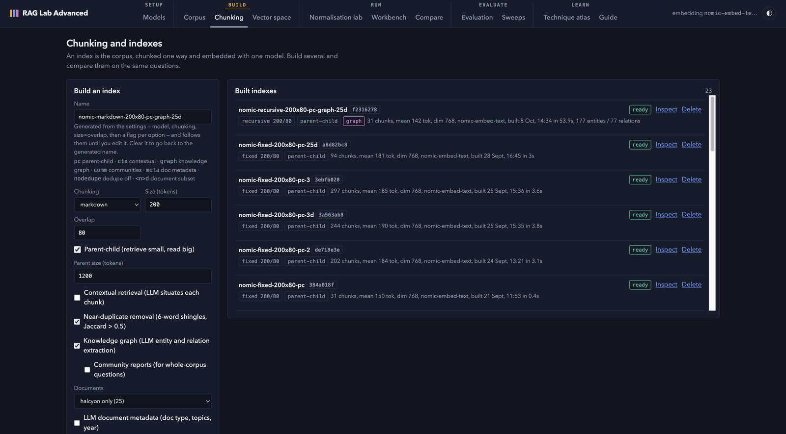
Chunking. Each build is its own index: strategy, size, parent-child, contextual retrieval, dedupe, graph.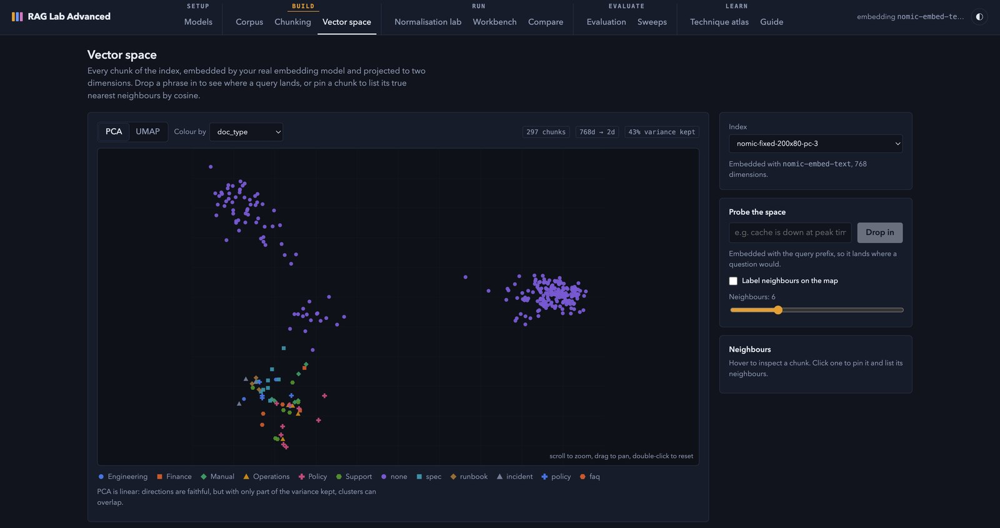
Vector space. Every chunk on a PCA or UMAP map. Drop in a phrase to see where a query lands.
Run
Rewrite the query in the corpus's own words, then trace one question through every stage of the pipeline.
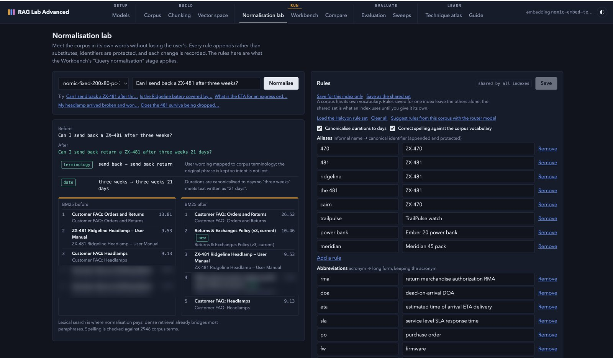
Normalisation lab. Aliases, acronyms, terminology and durations, with BM25 results before and after.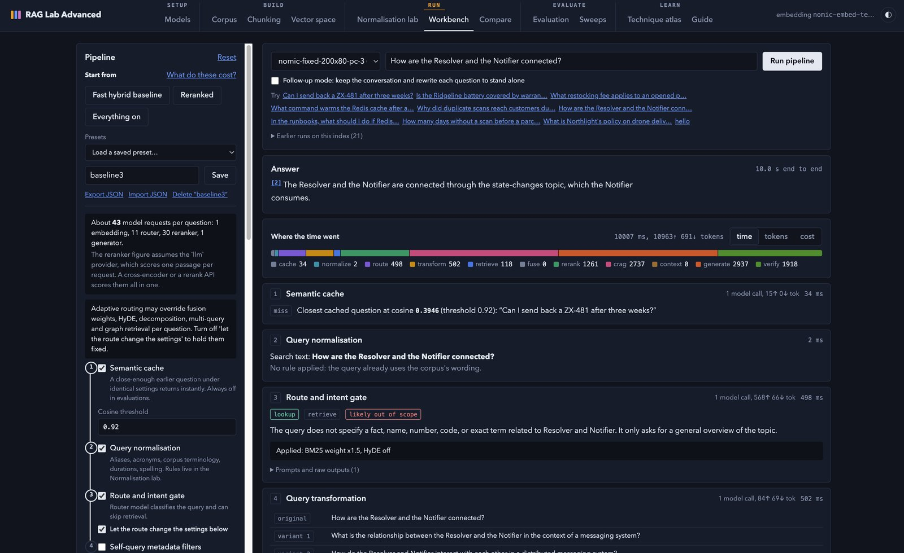
Workbench. Twelve switchable stages, the answer, and where every millisecond and token went.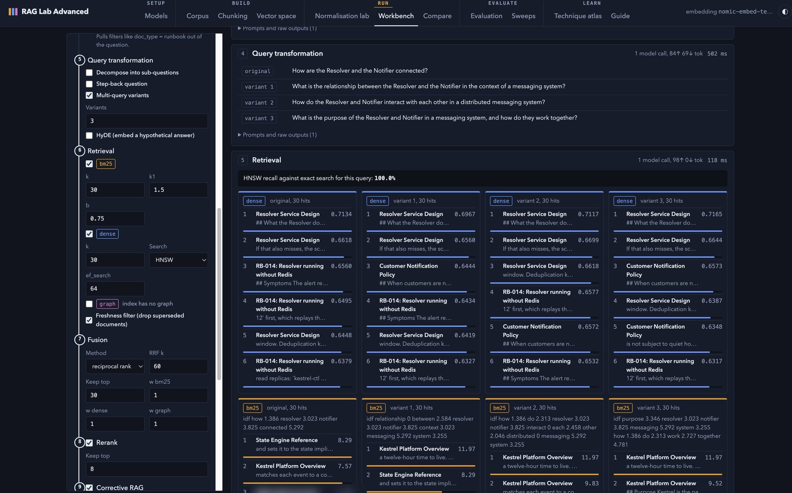
Retrieval. Multi-query variants, then dense HNSW and BM25 lists side by side, with HNSW recall against exact search.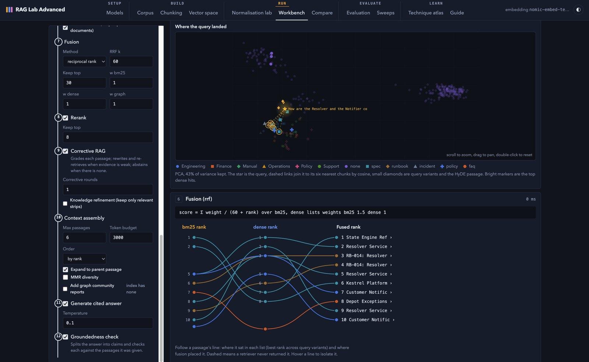
Fusion. The query starred among its nearest chunks, and each passage's rank traced into the fused order.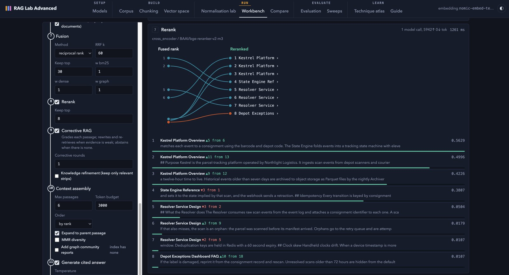
Rerank. A cross-encoder reorders the candidates, and every move up or down is shown.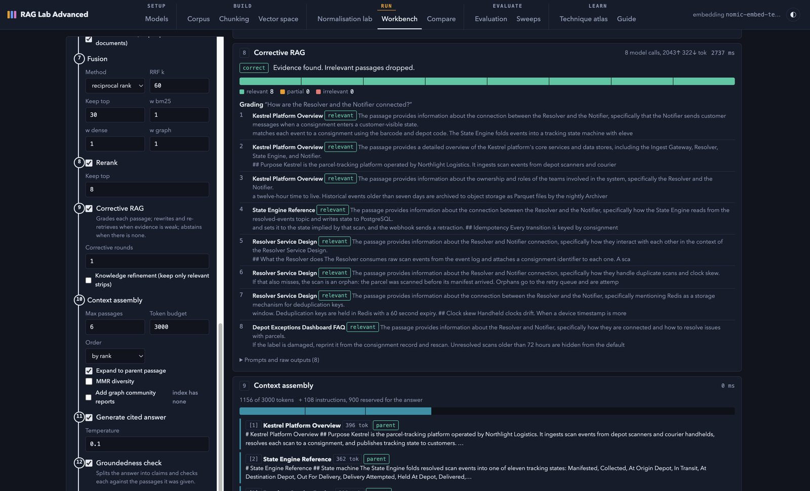
Corrective RAG. Each passage graded relevant, partial or irrelevant before the context is assembled.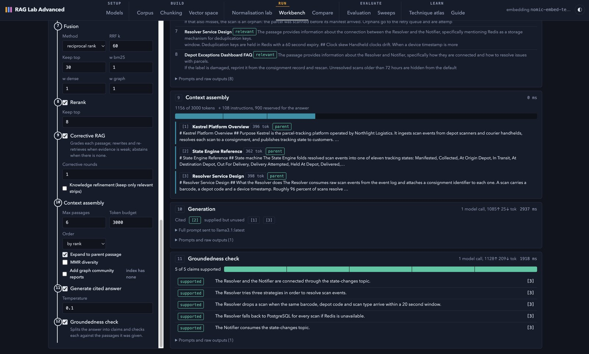
Context, answer, groundedness. Context packed to a token budget, a cited answer, and each claim checked against the passages it was given.
Compare
One question under two configurations.
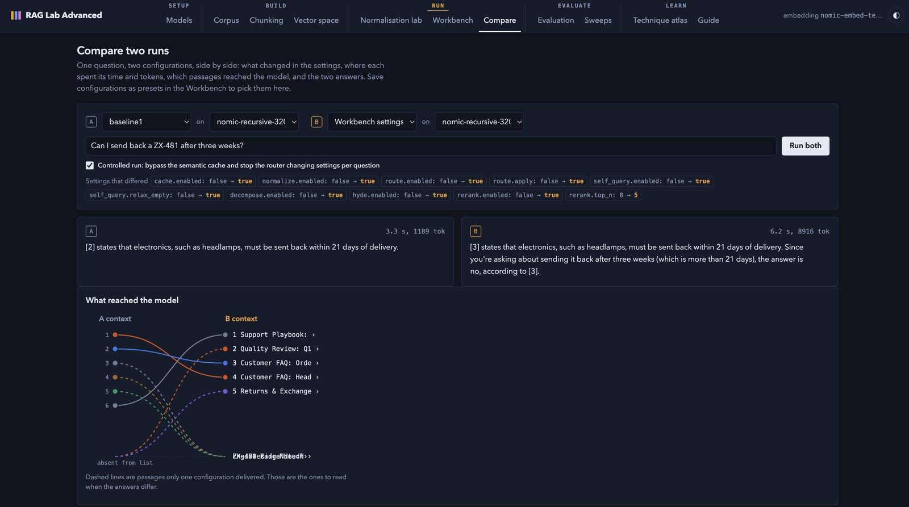
Two runs. The settings that differed, both answers, and which passages reached the model on each side.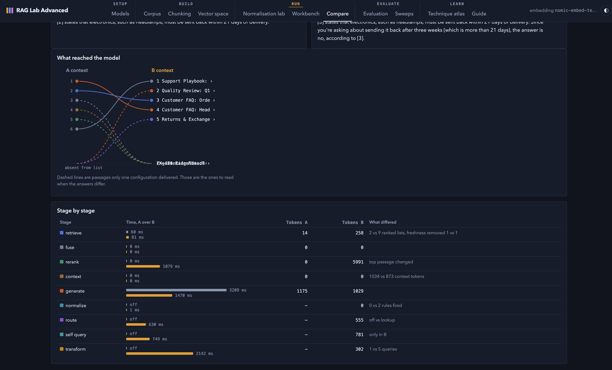
Stage by stage. Time and tokens for every stage of both runs, and what differed at each.
Then measure it: evaluation sets scored per stage, parameter sweeps, a technique atlas and an in-app guided first run.